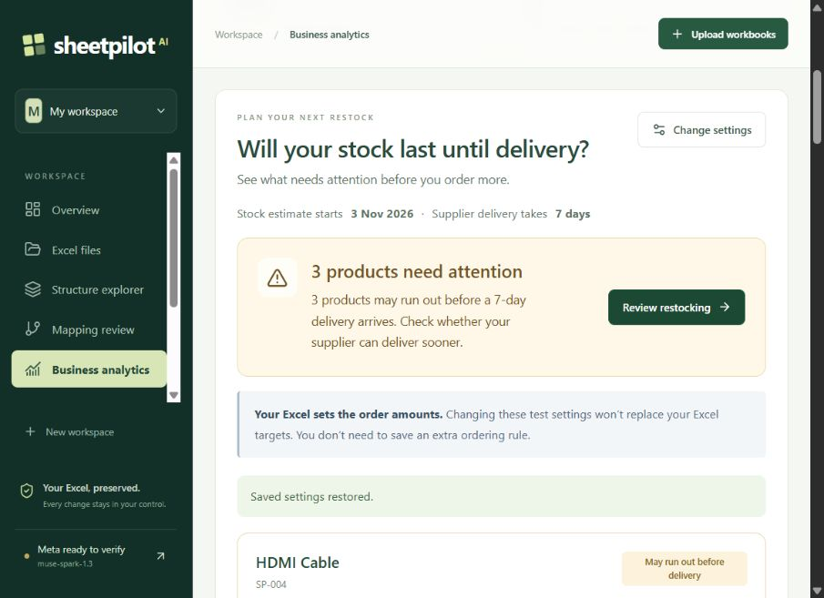

Business data is spread across Excel files with different columns and layouts, making sales analysis and stock planning difficult.
Built a React and FastAPI app that inspects workbooks, proposes mappings through the official Meta Model API, and lets the user review cross-file relationships.
Connected Sales, Inventory, and Procurement tools to reviewed records, with deterministic calculations for money and quantities.
Human-approved purchase proposals generate a separate Excel workbook with source traces and an audit history; originals stay unchanged.
PythonFastAPIReactTypeScriptSQLiteMeta Model APIOpenPyXL
The demo uses fictional company workbooks. Inspect the source rows, review mappings and relationships, then follow an inventory proposal through approval and Excel output. This is a local hackathon MVP; uncertain layouts require review.

Actual stock-planning screen · sample electronics inventory
Personal project · Demo
AI RAG Assistant for a Computer Store
Product discovery and lead capture
Customer question→Search catalog→Recommend parts→Capture lead
Problem
Customers need help choosing compatible parts, while staff repeatedly answer product and pricing questions.
Built an n8n assistant that retrieves product information using embeddings and semantic search.
Connected recommendations to available catalog information and catalog pricing.
Added purchase-intent routing and lead delivery to Telegram.
Illustrative workflow: a customer asks for a PC within a budget; the assistant retrieves catalog items, suggests parts, and routes an interested customer to Telegram. This describes the workflow, not a measured sales result.
Personal project · Demo
Real Estate Lead Qualification
From inquiry to a qualified appointment
New inquiry→Collect & score→Schedule meeting→Save lead
Problem
Manually reviewing every property inquiry takes time and makes follow-up inconsistent.
Built a chatbot workflow that gathers requirements and assigns a lead score from customer responses.
Connected qualified-lead scheduling to a calendar and saved customer details in Google Sheets.
Used n8n to connect APIs, qualification, and follow-up steps.
Illustrative workflow: collect budget, property type, and preferred area; use the configured qualification criteria to decide the next step; schedule eligible leads and retain the record for follow-up.
Personal project · Demo
Restaurant Ordering Assistant
Connected ordering, FAQs, and status updates
Order message→Route intent→Create & track→Status update
Problem
Orders, cancellations, reservations, and common questions compete for staff attention in chat.
Built an n8n chatbot workflow for order creation, cancellation, tracking, and reservations.
Added FAQ routing for menu, location, availability, and restaurant policies.
Connected order-status changes to customer updates.
Illustrative workflow: a customer places an order, the workflow records it, and later status changes trigger an update. The project demonstrates connected operations; it is not presented as a deployed client system.
Personal project · Prototype
Marketing Campaign Builder Agent
Budget-aware campaign drafts
Business & budget→Plan & delegate→Evaluate drafts→Human review
Problem
Turning a business idea and a limited budget into a structured campaign plan takes research and coordination.
Built an orchestrator that selects specialist workers based on the business brief and budget.
Added an evaluator-and-revision loop for campaign drafts.
Produces a draft content calendar and action plan for human review before publishing or spending.
Illustrative workflow: provide a product brief and budget, generate specialist drafts, review the evaluator feedback, then edit the resulting calendar. Generated plans require judgment and do not guarantee campaign performance.
More projects · research & lead intake
Personal collaboration · Team demo
AI Research Assistant
A local-LLM research assistant that searches, summarizes, compares sources, and produces structured reports.
My contribution: web search, page scraping, tool routing, orchestration, and Gradio UI. My teammate built question generation, summarization, source comparison, and report generation.
I’m Ziad, an Electronics and Communication Engineering student at AASTMT. I build practical AI applications with Python and n8n, from product assistants and lead workflows to SheetPilot AI, my solo Meta AI Hackathon project. My focus is connecting AI to real business data, with clear validation and human review where needed.
Interested in AI automation opportunities, internships, and focused freelance projects.
Bachelor of Electronics & Communication Engineering
Arab Academy for Science, Technology & Maritime Transport · 2025–2029 · GPA 3.89
Arabic — native
English — fluent
Digital Egypt Pioneers · AI Automation
Python, AI SDKs, APIs, webhooks, and chatbot workflows.
Internships & training
Intern — League of Arab States, Sustainable Development Sector
Contributed to youth-focused digital initiatives and a technical feasibility study for an Arabic proficiency assessment platform. Participated in the Arab-Chinese Youth Forum on AI.
Low Current Systems Trainee — Savills
Hands-on training in access control, plus CCTV, structured cabling, fire alarm components, and networking fundamentals.
Have a workflow you want to improve?
Tell me what happens today, which apps or files you use, and what you want the result to be. I’ll help define a focused automation or AI app. For internships and roles, include the opportunity details.